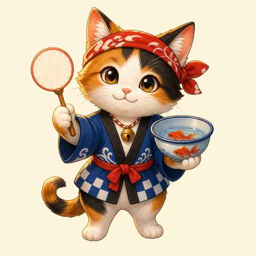

Current order
First Lantern Scoop
Bonus: keep water calm and paper un-torn.
Blue-hour ennichi dexterity arcade

Drag a fragile paper poi net through lantern-lit water, tilt the rim under requested goldfish, then lift on the shrinking ripple ring before the paper tears.
Audio starts after you press Start; visual ripple, paper, and order cues work if muted.
Current order
Bonus: keep water calm and paper un-torn.
Drag the poi net slowly toward the highlighted red fish.
Resume to keep scooping. Desktop: drag mouse, Space/Enter lift, Q/E tilt, B nudge, X swap, F focus, P pause, R restart.